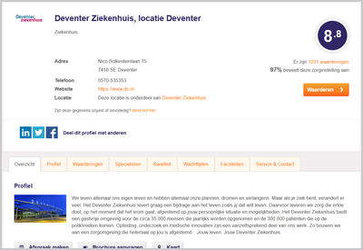
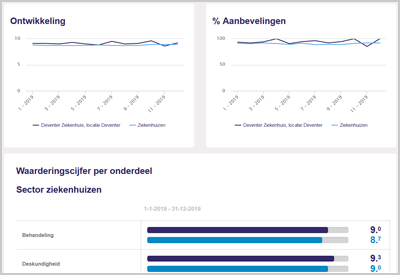
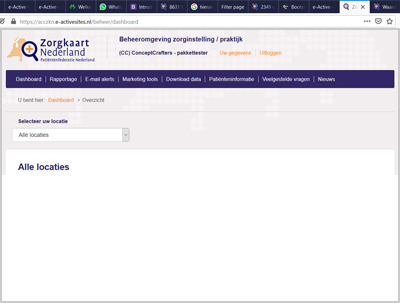
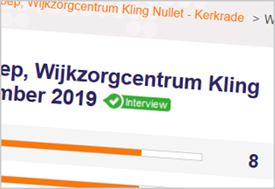

Met patiëntervaringen de zorg beter maken
Profileer, analyseer en verbeter op basis van ervaringen van uw patiënten
Bekijk de pakkettenEen greep uit de voordelen van een ZorgkaartNederland pakket.

Uitgebreid profiel en betere zichtbaarheid
Creëer een uitgebreid profiel met beschrijving, logo’s, en filmpjes. Koppel uw social media en zorg voor extra mogelijkheden om zorgzoekers naar uw webpagina te leiden.

Leer en verbeter
Hoe scoort u ten opzichte vanuw sector? Middels benchmark en tal van analyses krijgt u inzichten over uw organisatie en zorgverleners.

Handig overzicht
Krijg middels een dashboard een totaaloverzicht over uw locatie(s) en zorgverleners. Middels een alert wordt u op de hoogte gebracht van nieuwe waarderingen. Maak gebruik van downloadmogelijkheden om data te delen om nader te analyseren.

Geverifieerde waarderingen
Maak gebruik van de mogelijkheden die ZorgkaartNederland biedt om geverifieerde waarderingen te krijgen. Deze methodes helpen om relatief eenvoudig veel waarderingen te krijgen. Bij geverifieerde waarderingen is 100% zeker dat inzenders daadwerkelijk zorg bij u hebben genoten.
Gebruikers van ZorgkaartNederland aan het woord
Selecteer het pakket dat bij u past
- Dashboard met kerncijfers
- Reageren op waarderingen
- E-alert bij nieuwe waardering
- Openingstijden, links, etc.
- Diverse koppelingen (API)
- Dashboard met kerncijfers
- Reageren op waarderingen
- E-alert bij nieuwe waardering
- Openingstijden, links, etc.
- Diverse koppelingen (API)
- Profiel beheren
- Statistieken
- Benchmark binnen de sector
- Waarderingen als download